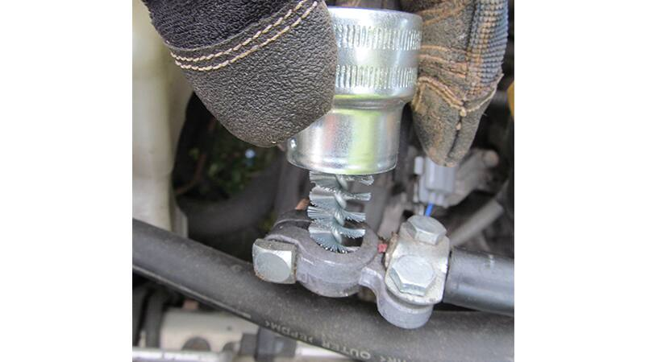

نحوه جایگزینی باتری ماشین
باتری خودرو
مهم است که چگونه با وسیله نقلیه خود رفتار می کنید ، باتری های ماشین هنوز هر چند سال یک بار از بین می روند و نیاز به تعویض دارند. این فقط یکی از موارد نگهداری معمولی است که ما به عنوان دارندگان خودرو با آنها سروکار داریم. خوشبختانه ، نحوه تعویض باتری ماشین کار ساده ای است.
این کار را خودتان انجام دهید و اطمینان داشته باشید که وسیله نقلیه شما هر روز صبح حتی در سردترین هوا شروع به کار خواهد کرد. در اینجا نحوه جدا کردن باتری ماشین و نصب باتری جدید آورده شده است.
قبل از شروع ، اطمینان حاصل کنید که باتری مناسب وسیله نقلیه خود را انتخاب کنید.
نکات لازم برای باز کردن باتری قدیمی خودرو:
- کتابچه راهنمای صاحب وسیله نقلیه خود را برای محل باتری ماشین خود بررسی کنید. فضای زیر کاپوت در بسیاری از وسایل نقلیه جدید محل نصب باتری است.
۲- پست های مثبت و منفی و کابل های مربوطه را که به هر یک وصل شده اید ، شناسایی کنید. پست مثبت ممکن است یک پوشش پلاستیکی قرمز روی آن باشد و / یا کابل وصل شده به آن قرمز باشد. همچنین باید یک نماد “+” وجود داشته باشد که روی باتری چاپ شده باشد .
۳-با استفاده از آچار ، مهره یا پیچ را که محفظه منفی و کابل را در پست باتری منفی محکم می کند ، شل کنید.
۴-هنگامی که پیچ و مهره را شل کردید ، ابتدا کابل را از ترمینال منفی باتری خارج کنید. همین کار را با ترمینال مثبت انجام دهید.
۵-گیره یا سیستم نگهدارنده را که باتری را در جای خود نگه داشته اید ، جدا کنید و قطعات و اتصال دهنده ها را کنار بگذارید تا از ریختن یا جای جای آنها جلوگیری شود.
۶-باتری را بدون احتیاط بیش از حد بلند کنید (شایدکمی سنگین باشد).
نکات لازم برای نصب باتری جدید خودرو:
۱-پایانه های متصل به انتهای کابل های باتری را بررسی کنید تا از تمیز بودن و بدون خوردگی اطمینان حاصل شود. اگر اینطور نیست ، آنها را با استفاده از ابزار تمیز کردن ترمینال تمیز کنید. یک ابزار ویژه در دسترس است که بر روی پست قرار می گیرد ، با یک برس دیگر که داخل گیره قرار می گیرد. در صورت عدم موفقیت این ، یک قلم مو سیم خاموش می تواند کار را انجام دهد. هرچه پست ها و گیره های شما تمیز تر باشد ، ارتباط باتری و بهتر و مثبت تری به شما خواهد رسید.
۲-باتری را طوری تنظیم کنید که پست قرمز و مثبت با محل ترمینال مثبت و محل کابل مطابقت داشته باشد.
۳-باتری جدید را وارد کنید. سپس آن را با گیره یا سیستم نگهدارنده که زودتر از آن جدا شده ایمن کنید.
۴-درپوش های پلاستیکی را که قسمت های باتری را پوشانده است ، برداشته و واشرهای ضد خوردگی را روی آنها نصب کنید.
۵-قبل از اتصال ترمینال مثبت به پست مثبت ، ابتدا یک لایه نازک از گریس را در قسمت های باتری و پایانه ها قرار دهید. گریس ضد خوردگی ویژه برای جلوگیری از رسوب خوردگی مایل به سبز و مایل به سبز وجود دارد که در واقع می تواند از شارژ باتری جلوگیری کند. با استفاده از آچار ، اتصال را محکم کنید تا سفت شود. سپس برای ترمینال منفی تکرار کنید.
۶-گیره یا سیستم نگهدارنده را سفت کنید. شما نصب باتریاتومبیل را تمام کردید.شما نحوه تعویض باتری ماشین را یاد گرفته اید و به یک کار خوب افتخار کنید و با اطمینان رانندگی کنید.
سوخت
پس از بررسی سیستم جرقه زنی ، به سیستم سوخت بروید. قطعات در اینجا به طور معمول دوام بیشتری دارند اما فرسوده میشوند شاید فقط فیلتر سوخت مسدود شده باشد ، یا انژکتورهای سوخت کثیف هستند. اگر این موارد خوب باشند ، پمپ سوخت یا سنسور جریان هوا می تواند در حال از بین رفتن باشد.علائم ناخوشایند سیستم سوخت ناگهان ظاهر می شوند و اغلب در حالت توقف قابل توجه هستند.

مکانیکی
ضعف موتور نیز می تواند کمی پیچیده تر باشد. خطوط خلاء متصل به منیفولد ورودی را بررسی کنید. در صورت بروز هر مشکلی به دنبال ترک و تعویض خطوط باشید.
برخلاف علائم سوء مصرف سوخت ، علائم ناپایداری مکانیکی با سرعت بالاتر موتور از بین نمی رود و اغلب بدتر می شوند. خامسوزی میتواند به اندازه کافی جدی باشد که باعث ایجاد لرزش قابل توجه در داخل کابین یا حتی آتش سوزی شود. در این مرحله ، موتور شما باید یک کد را نشان دهد.
چراغ ENGINE را بررسی کنید اگر شما یک چراغ (Check Engine) دارید ، کامپیوتر شما اطلاعاتی را در مورد مشکل تشخیص داده شده ذخیره می کند. نکته جالب در مورد کدهای تشخیصی این است که آنها می توانند بسیار خاص باشند ، حتی اغلب عمیق می شوند که کدام سیلندر دارای مشکل است .